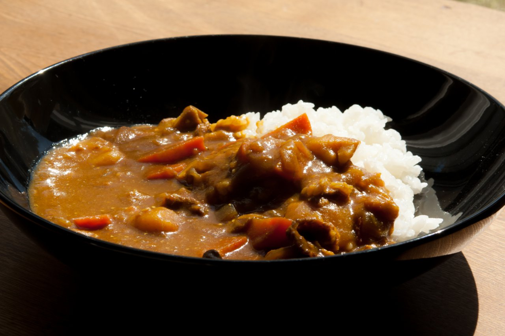
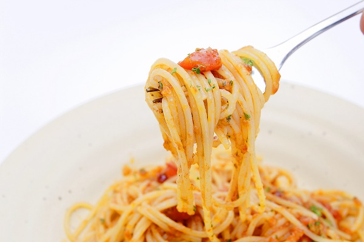
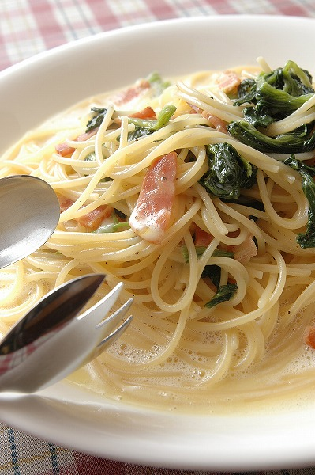

軽食＆レストラン
1Fドリンクコーナー
ご入浴後の、ひとときに、軽いお食事や各種ドリンクはいかがでしょうか。
2階飲食コーナー終了後も営業いたしております。
2F大広間併設レストラン藤
入浴後、お食事はいかがでしょうか。
ご飯類・麺類・おつまみ・一品料理・お飲物等、
メニューも豊富でご満足いただける美味しさと値段です。
営業時間
1Fドリンクコーナー: 8:00 ~ 22:00
2F大広間併設レストラン藤: 11:00 ~ 21:00(ラストオーダー 21:00)
おすすめメニュー

カレーライス(サラダ付き) ￥700

ナポリタンスパゲッティ ￥800

クリームパスタ ￥850